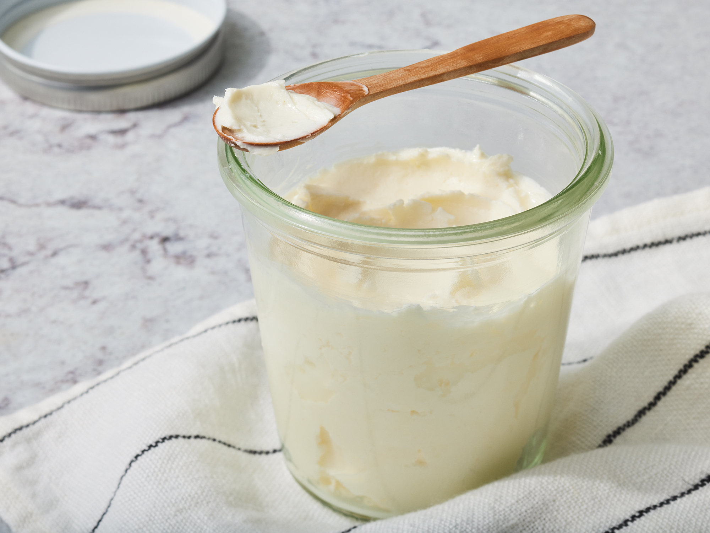

Homemade Butter
Learn how to make butter at home by putting heavy cream in a food processor and running it until it turns into butter.

A breakdown of the time required for this recipe is below, along with servings.
- Prep: 10 mins
- Total: 10 mins
- Servings: 16
- Yield: 1 cup (225g)
Nutritional Information
|
|
% Daily Value * |
| Calories: |
103 |
5% |
| Protein: |
0.6g |
1% |
| Carbohydrates: |
0.8g |
| Fat: |
11g |
17% |
| Saturated Fat: |
6.9g |
34% |
| Cholesterol: |
40.8mg |
14% |
| Vitamin A: |
437.3IU |
9% |
| Niacin Equivalents: |
0.1mg |
1% |
| Vitamin C: |
0.2mg |
| Folate: |
1.2mcg |
| Calcium: |
19.4mg |
2% |
| Magnesium: |
2.1mg |
1% |
| Potassium: |
22.3mg |
1% |
| Sodium: |
47.6mg |
2% |
| Calories From Fat: |
99.1 |
*Percent Daily Values are based on a 2,000 calorie diet. Your values may be higher or lower depending on your calorie needs.
Ingredients
- 2 cups (500ml) heavy cream
- 1/4 teaspoon salt (Optional)
Directions
- Pour heavy cream into a food processor or blender. Process on high until butter separates, about 10 minutes
- Strain off liquid, then press butter into a small bowl with the back of a spoon to further remove liquid. Season with salt.